This case study examines how nasalance varies across three etymological categories of Basque aspirates: oral, contact-nasalized (i.e., following a nasal consonant), and historically nasalized aspirates that are reported to be in flux.
The analysis relies on tidytable for fast data manipulation, cmdstanr for Stan interfacing, and a handful of tidy-Bayes helpers for visualisation and model comparison.
library(tidytable) # nice alternative to dplyr
library(cmdstanr)
library(posterior)
library(bayesplot)
library(brms)
library(ggplot2)
library(loo)
options(mc.cores = 4)We’ll use the following files
Basque speakers of the Zuberoan variety were recorded with a nasometer. The etymology has three relevant levels:
nas_data <- readRDS("nas_data.RDS") |>
rename(
etymology = E,
root = R,
speaker = S,
nasalance = N
) |>
filter(!is.na(nasalance)) |>
filter(etymology != "assimilated") |>
mutate(
E = as.factor(etymology) |> as.numeric(),
R = as.factor(root) |> as.numeric(),
speaker = as.factor(speaker) |> as.numeric()
)nas_dataThe quick summary below confirms the expected ranking: contact tokens are the most nasal, oral tokens the least, and the nasalized class falls somewhere in between.
(summary <- nas_data |>
summarize(
mean = mean(nasalance),
sd = sd(nasalance),
SE = sd(nasalance) / sqrt(n()),
lq = quantile(nasalance, 0.025),
hq = quantile(nasalance, 0.975),
.by = c("etymology", "E")))ggplot(nas_data, aes(x = nasalance, fill = etymology, color = etymology)) +
geom_density(alpha = 0.5, linewidth = 1.2) +
labs(
title = "Distribution of nasalance by etymology",
x = "Nasalance (N)",
y = "Density"
)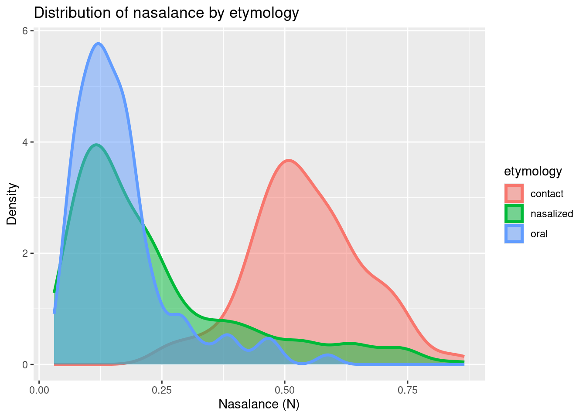
We are modelling proportions of nasalance, with a categorical predictor (etymological category or group), to try to understand if some aspirates /h/ are nasalized in Basque.
Assumptions:
Orals should have low proportion values (~20%).
Contact refers to aspirates after a nasal consonant, so they should have high values (~50–60%).
Nasalized aspirates are being lost in the language:
The core research question is therefore whether the nasalized category is best described by a mixture of two latent sub-processes.
We focus here on a two-component mixture model (Nicenboim, Schad, and Vasishth 2025), where each component represents a distinct cognitive process. The latent vector \(\mathbf{z}\) indicates which component an observation belongs to:
\[\begin{equation} \begin{aligned} z_n \sim \mathit{Bernoulli}(\theta)\\ y_n \sim \begin{cases} p_1(\Theta_1), & \text{ if } z_n =1 \\ p_2(\Theta_2), & \text{ if } z_n=0 \end{cases} \end{aligned} \tag{2.1} \end{equation}\]
In this specific case, \(y_n\) is the observed nasalance of a historically nasalized root, and the latent binary indicator \(z_n\) determines whether the token was produced via the contact-like process \((p_1)\) or the oral-like process \((p_2)\).
In the next few chunks we generate two artificial data sets so that we can stress-test our models: one true mixture and one true non-mixture. We ignore subject‑level variability for now.
Before simulating, we re-express the Beta distribution in terms of a more intuitive mean/\(\sigma\) parameterisation. The helper functions beta_pars() and rbeta2() only wrap the algebra–they do not affect inference later on, but they make simulation vastly more readable.
\[ \text{var} < \mu (1 - \mu), \quad \nu = \frac{\mu(1 - \mu)}{\text{var}} - 1, \quad \alpha = \mu \nu, \quad \beta = (1 - \mu) \nu \]
beta_pars <- function(mean, sd) {
var <- sd^2
alpha <- ((1 - mean) / var - 1 / mean) * mean^2
beta <- alpha * (1 / mean - 1)
list(alpha = alpha, beta = beta)
}
rbeta2 <- function(n, mean, sd) {
pars <- beta_pars(mean, sd)
rbeta(n = n, shape1 = pars$alpha, shape2 = pars$beta)
}prob_nas below is the root-level probability that a historically nasalised aspirate is realised via a “high-nasalance mechanism” (as in contact condition). By varying this single probability you can dial-in anything from a pure-contact to a pure-oral realisation.
set.seed(99)
N <- 100
true <- list(
mu_oral = 0.166,
sigma_oral = 0.0993,
mu_contact = 0.543,
sigma_contact = 0.115,
prob_nas = 0.15 # made-up probability of nasalization
)
nas_oral <- rbeta2(N, mean = true$mu_oral, sd = true$sigma_oral)
nas_contact <- rbeta2(N, mean = true$mu_contact, sd = true$sigma_contact)
is_nas <- rbinom(N, size = 1, prob = true$prob_nas)
nas_nasalized <- ifelse(
is_nas == 1,
rbeta2(N, mean = true$mu_contact, sd = true$sigma_contact), # contact
rbeta2(N, mean = true$mu_oral, sd = true$sigma_oral) # oral
)
mix_data <- tidytable(
etymology = rep(c("oral", "contact", "nasalized"), each = N),
nasalance = c(nas_oral, nas_contact, nas_nasalized)
) |>
mutate(E = as.factor(etymology) |> as.numeric())Check distribution and visualize:
mix_data |>
summarize(
mean = mean(nasalance),
sd = sd(nasalance),
SE = sd(nasalance) / sqrt(n()),
lq = quantile(nasalance, 0.025),
hq = quantile(nasalance, 0.975),
.by = c("etymology", "E")
)ggplot(mix_data, aes(x = nasalance, fill = etymology, color = etymology)) +
geom_density(alpha = 0.5, linewidth = 1.2) +
labs(
title = "SIMULATED distribution of nasalance by etymology (mixture)",
x = "Nasalance (N)",
y = "Density"
) +
theme_minimal()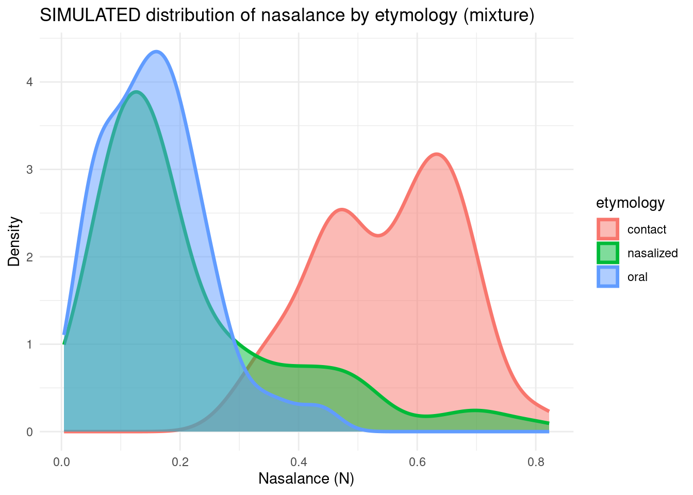
Experiment with different values of prob_nas and observe the effect on the distribution.
Here every category gets its own Beta distribution. The parameters for oral and contact are the same as above; the nasalized mean/sd are set to match the empirical data.
set.seed(99)
true2 <- list(
mu_oral = true$mu_oral,
sigma_oral = true$sigma_oral,
mu_contact = true$mu_contact,
sigma_contact = true$sigma_contact,
mu_nasalized = 0.233,
sigma_nasalized = 0.176
)
nas_oral <- rbeta2(N, mean = true2$mu_oral, sd = true2$sigma_oral)
nas_contact <- rbeta2(N, mean = true2$mu_contact, sd = true2$sigma_contact)
nas_nasalized2 <- rbeta2(N, mean = true2$mu_nasalized, sd = true2$sigma_nasalized)
nonmix_data <- tidytable(
etymology = rep(c("oral", "contact", "nasalized"), each = N),
nasalance = c(nas_oral, nas_contact, nas_nasalized2)
) |>
mutate(E = as.factor(etymology) |> as.numeric())Check distribution and visualize:
nonmix_data |> summarize(mean = mean(nasalance),
sd = sd(nasalance),
SE = mean(nasalance)/sqrt(n()),
lq = quantile(nasalance, 0.025),
hq = quantile(nasalance, 0.975),
.by = c("etymology","E"))ggplot(nonmix_data, aes(x = nasalance, fill = etymology, color = etymology)) +
geom_density(alpha = 0.5, linewidth = 1.2) +
labs(title = "SIMULATED distribution of nasalance by etymology",
x = "N",
y = "Density") +
theme_minimal()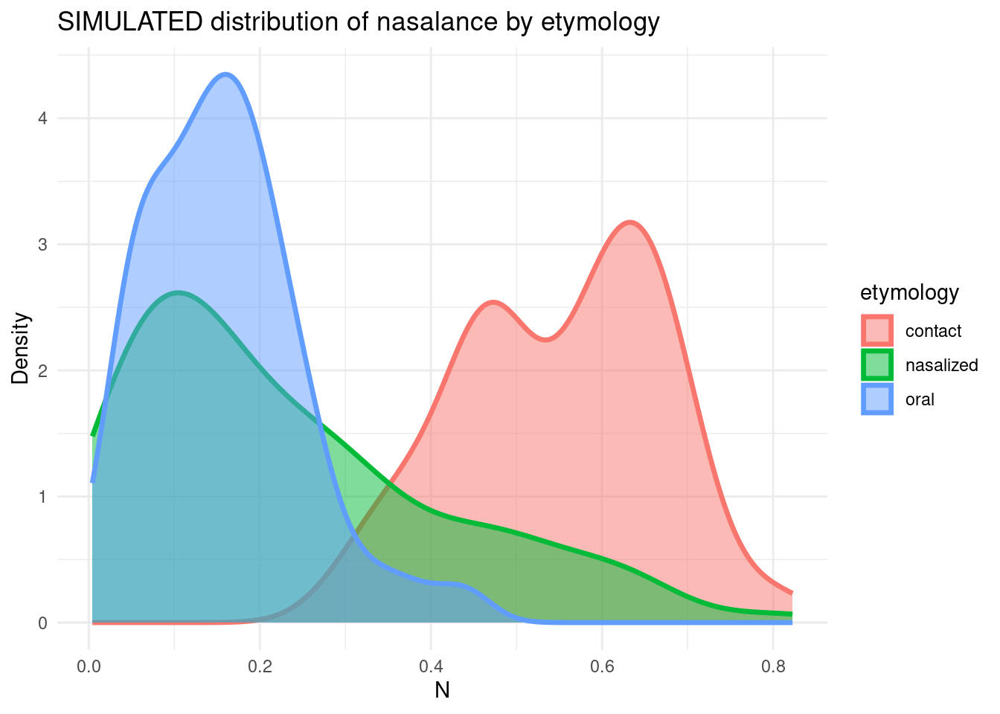
Both distributions are visually similar, underscoring the difficulty of distinguishing the underlying generative processes by eye alone.
We next fit the simulated data sets with both a mixture and a non-mixture model. We expect the following:
the mixture model should outperform when the data are a true mixture; and
the non-mixture model should win when the data really come from three separate Beta distributions.
The Stan program below encodes the likelihood
\[ p(y_n\mid\Theta) = \theta\,p_1(y_n\mid\Theta_1) + (1-\theta)\,p_2(y_n\mid\Theta_2), \]
where \(p_1\) and \(p_2\) are Beta distributions parameterised by their means and standard deviations. Because Stan does not allow discrete parameters in the parameters block, we marginalise over the latent indicator \(z_n\) via log_sum_exp().
Stan model:
#include beta2.stan
data {
int<lower = 1> N;
vector[N] nasalance;
array[N] int<lower = 1> E;
}
parameters {
real<lower = 0, upper = 1> mu_contact;
real<lower = 0, upper = sqrt(mu_contact*(1-mu_contact))> sigma_contact;
real<lower = 0, upper = 1 > mu_oral;
real<lower= 0, upper = sqrt(mu_oral*(1-mu_oral))> sigma_oral;
real<lower = 0, upper = 1> prob_nas;
}
model {
// priors for the task component
target += normal_lpdf(mu_contact | 0.6, 0.2);
target += normal_lpdf(mu_oral | 0.2, 0.3);
target += normal_lpdf(sigma_oral | 0, 0.3);
target += normal_lpdf(sigma_contact | 0, 0.3);
target += beta_lpdf(prob_nas | 3, 10);
for(n in 1:N){
if(E[n] == 1) // contact
target += beta2_lpdf(nasalance[n] | mu_contact, sigma_contact);
else if(E[n] == 3) // oral
target += beta2_lpdf(nasalance[n] | mu_oral, sigma_oral);
else if(E[n] == 2) //nas
target += log_sum_exp(log(prob_nas) +
beta2_lpdf(nasalance[n] | mu_contact, sigma_contact),
log1m(prob_nas) +
beta2_lpdf(nasalance[n] | mu_oral, sigma_oral));
}
}
generated quantities {
vector[N] log_lik;
for(n in 1:N){
if(E[n] == 1) // contact
log_lik[n] = beta2_lpdf(nasalance[n] | mu_contact, sigma_contact);
else if(E[n] == 3) // oral
log_lik[n] = beta2_lpdf(nasalance[n] | mu_oral, sigma_oral);
else if(E[n] == 2) //nas
log_lik[n] = log_sum_exp(log(prob_nas) +
beta2_lpdf(nasalance[n] | mu_contact, sigma_contact),
log1m(prob_nas) +
beta2_lpdf(nasalance[n] | mu_oral, sigma_oral));
}
// Posterior predictions:
vector[N] nasalance_rep;
for (n in 1:N) {
if (E[n] == 1)
nasalance_rep[n] = beta2_rng(mu_contact, sigma_contact);
else if (E[n] == 3)
nasalance_rep[n] = beta2_rng(mu_oral, sigma_oral);
else if (E[n] == 2) {
if (bernoulli_rng(prob_nas) == 1)
nasalance_rep[n] = beta2_rng(mu_contact, sigma_contact);
else
nasalance_rep[n] = beta2_rng(mu_oral, sigma_oral);
}
}
}mix_m <- cmdstan_model("./mix.stan")Posterior recovery plots (mcmc_recover_hist) show that all five parameters are recovered when the data truly come from a mixture. (A complete pipeline would also include SBC, which we omit for brevity: Talts et al. 2018; Modrák et al. 2023). We skip this step here.
Notably, the same Stan model also fits the non-mixture data well.
mix_ls <- list(
N = nrow(mix_data),
nasalance = mix_data$nasalance,
E = as.integer(mix_data$E)
)
mixm_mixd <- mix_m$sample(data = mix_ls, parallel_chains = 4)Parameter recovery:
bayesplot::mcmc_recover_hist(
x = mixm_mixd$draws(c("mu_oral", "sigma_oral", "mu_contact", "sigma_contact", "prob_nas")),
true = unlist(true)
)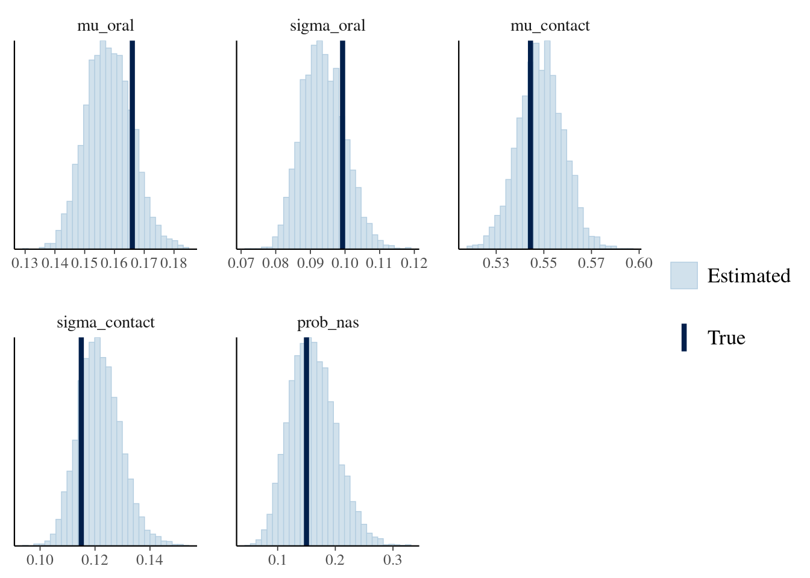
yrep <- mixm_mixd$draws("nasalance_rep") |>
posterior::as_draws_matrix()
ppc_dens_overlay_grouped(y = mix_data$nasalance,
yrep = yrep[1:100, ],
group = mix_data$etymology) +
ggtitle("Mixture model on mixture data")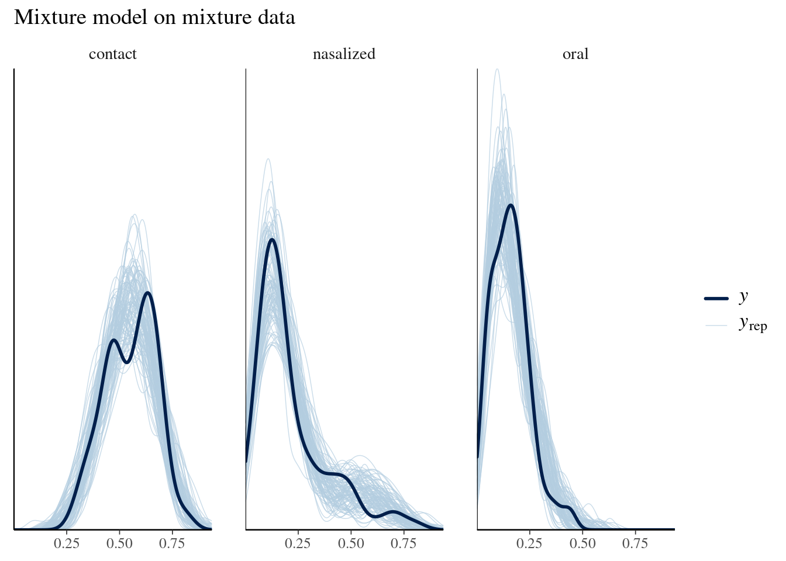
Data not generated by a mixture model can be perfectly fit by a mixture model!
nonmix_ls <- list(
N = nrow(nonmix_data),
nasalance = nonmix_data$nasalance,
E = as.integer(nonmix_data$E)
)
mixm_nonmixd <- mix_m$sample(data = nonmix_ls, parallel_chains = 4)yrep <- mixm_nonmixd$draws("nasalance_rep") |>
posterior::as_draws_matrix()
ppc_dens_overlay_grouped(y = nonmix_data$nasalance,
yrep = yrep[1:100, ],
group = nonmix_data$etymology) +
ggtitle("Mixture model on non-mixture data")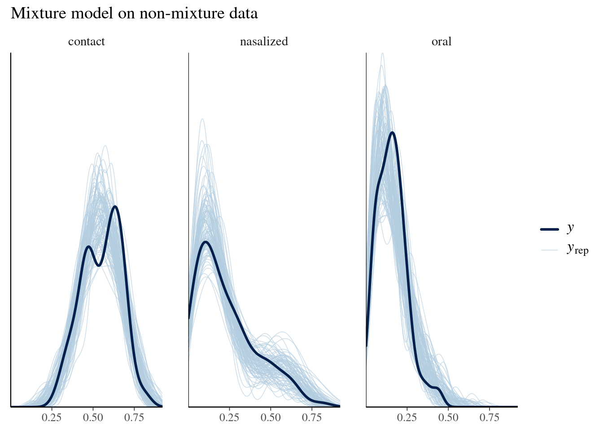
This alternative Stan program replaces the Bernoulli mixture with a dedicated Beta for the nasalised class. Everything else remains the same. This model therefore embodies the (maybe unrealistic) hypothesis that historically nasalised aspirates form a coherent third distribution rather than a mixture of two.
Stan model:
#include beta2.stan
data {
int<lower = 1> N;
vector[N] nasalance;
array[N] int<lower = 1> E;
}
parameters {
real<lower = 0, upper = 1> mu_contact;
real<lower = 0, upper = sqrt(mu_contact*(1-mu_contact))> sigma_contact;
real<lower = 0, upper = 1 > mu_oral;
real<lower= 0, upper = sqrt(mu_oral*(1-mu_oral))> sigma_oral;
real<lower = 0, upper = 1> mu_nasalized;
real<lower = 0, upper = sqrt(mu_nasalized*(1-mu_nasalized))> sigma_nasalized;
}
model {
// priors for the task component
target += normal_lpdf(mu_contact | 0.6, 0.2);
target += normal_lpdf(mu_oral | 0.2, 0.3);
target += normal_lpdf(mu_nasalized | 0.2, 0.3);
target += normal_lpdf(sigma_oral | 0, 0.3);
target += normal_lpdf(sigma_contact | 0, 0.3);
target += normal_lpdf(sigma_nasalized | 0, 0.3);
for(n in 1:N){
if(E[n] == 1) // contact
target += beta2_lpdf(nasalance[n] | mu_contact, sigma_contact);
else if(E[n] == 3) // oral
target += beta2_lpdf(nasalance[n] | mu_oral, sigma_oral);
else if(E[n] == 2) //nas
target += beta2_lpdf(nasalance[n] | mu_nasalized, sigma_nasalized);
}
}
generated quantities {
vector[N] log_lik;
vector[N] nasalance_rep;
for (n in 1:N) {
if (E[n] == 1) { // contact
log_lik[n] = beta2_lpdf(nasalance[n] | mu_contact, sigma_contact);
nasalance_rep[n] = beta2_rng(mu_contact, sigma_contact);
} else if (E[n] == 3) { // oral
log_lik[n] = beta2_lpdf(nasalance[n] | mu_oral, sigma_oral);
nasalance_rep[n] = beta2_rng(mu_oral, sigma_oral);
} else if (E[n] == 2) { // nasalized
log_lik[n] = beta2_lpdf(nasalance[n] | mu_nasalized, sigma_nasalized);
nasalance_rep[n] = beta2_rng(mu_nasalized, sigma_nasalized);
}
}
}nonmix_m <- cmdstan_model("./nonmix.stan")
nonmixm_mixd <- nonmix_m$sample(data = mix_ls, parallel_chains = 4)
nonmixm_nonmixd <- nonmix_m$sample(data = nonmix_ls, parallel_chains = 4)nonmixm_mixd variable mean median sd mad q5 q95 rhat ess_bulk ess_tail
lp__ 223.15 223.47 1.75 1.56 219.71 225.34 1.00 1813 2718
mu_contact 0.55 0.55 0.01 0.01 0.53 0.57 1.00 4616 2815
sigma_contact 0.12 0.12 0.01 0.01 0.11 0.13 1.00 4713 2760
mu_oral 0.16 0.16 0.01 0.01 0.14 0.17 1.00 4842 3373
sigma_oral 0.10 0.10 0.01 0.01 0.08 0.11 1.00 4589 3023
mu_nasalized 0.22 0.22 0.02 0.02 0.20 0.25 1.00 4331 2777
sigma_nasalized 0.16 0.16 0.01 0.01 0.14 0.18 1.00 4025 2499
log_lik[1] 1.12 1.12 0.07 0.07 1.00 1.24 1.00 5690 3494
log_lik[2] 1.24 1.24 0.07 0.07 1.11 1.35 1.00 5416 3472
log_lik[3] 0.84 0.84 0.08 0.08 0.70 0.97 1.00 5775 2994
# showing 10 of 607 rows (change via 'max_rows' argument or 'cmdstanr_max_rows' option)nonmixm_nonmixd variable mean median sd mad q5 q95 rhat ess_bulk ess_tail
lp__ 214.49 214.84 1.75 1.53 211.07 216.67 1.00 2090 2769
mu_contact 0.55 0.55 0.01 0.01 0.53 0.57 1.00 4788 3191
sigma_contact 0.12 0.12 0.01 0.01 0.11 0.13 1.00 4389 2846
mu_oral 0.16 0.16 0.01 0.01 0.14 0.17 1.00 4649 3389
sigma_oral 0.10 0.10 0.01 0.01 0.08 0.11 1.00 4673 2821
mu_nasalized 0.23 0.23 0.02 0.02 0.21 0.26 1.00 4673 3239
sigma_nasalized 0.18 0.18 0.01 0.01 0.16 0.20 1.00 3891 2795
log_lik[1] 1.12 1.13 0.07 0.07 1.00 1.24 1.00 4995 3031
log_lik[2] 1.24 1.24 0.07 0.07 1.12 1.35 1.00 4894 3185
log_lik[3] 0.84 0.85 0.08 0.08 0.70 0.97 1.00 5106 3449
# showing 10 of 607 rows (change via 'max_rows' argument or 'cmdstanr_max_rows' option)Recovery of the parameters of the non-mixture with the non-mixture model:
bayesplot::mcmc_recover_hist(
x = nonmixm_nonmixd$draws(c("mu_oral", "sigma_oral", "mu_contact", "sigma_contact", "mu_nasalized", "sigma_nasalized")),
true = unlist(true2)
)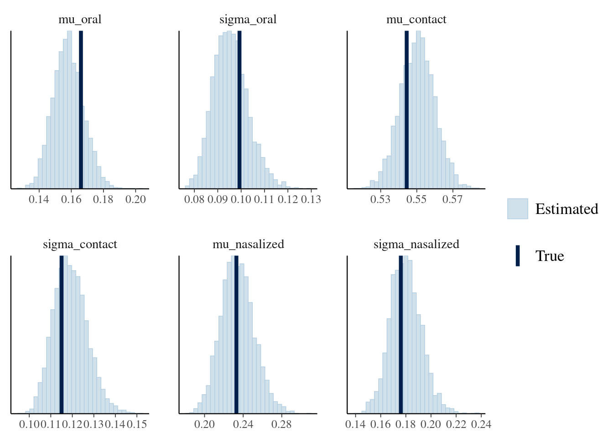
yrep_mixfit <- nonmixm_mixd$draws("nasalance_rep") |>
posterior::as_draws_matrix()
ppc_dens_overlay_grouped(
y = mix_data$nasalance,
yrep = yrep_mixfit[1:100, ],
group = mix_data$etymology
) +
ggtitle("Non-mixture model on mixture data")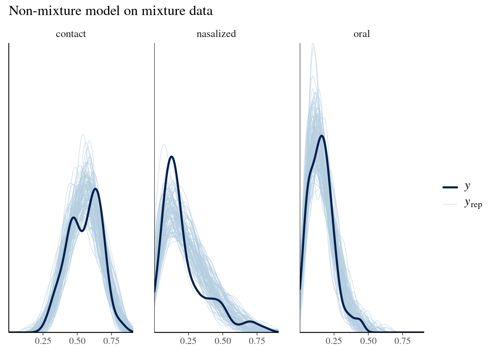
yrep_nonmixfit <- nonmixm_nonmixd$draws("nasalance_rep") |>
posterior::as_draws_matrix()
ppc_dens_overlay_grouped(
y = nonmix_data$nasalance,
yrep = yrep_nonmixfit[1:100, ],
group = nonmix_data$etymology
) +
ggtitle("Non-mixture model on non-mixture data")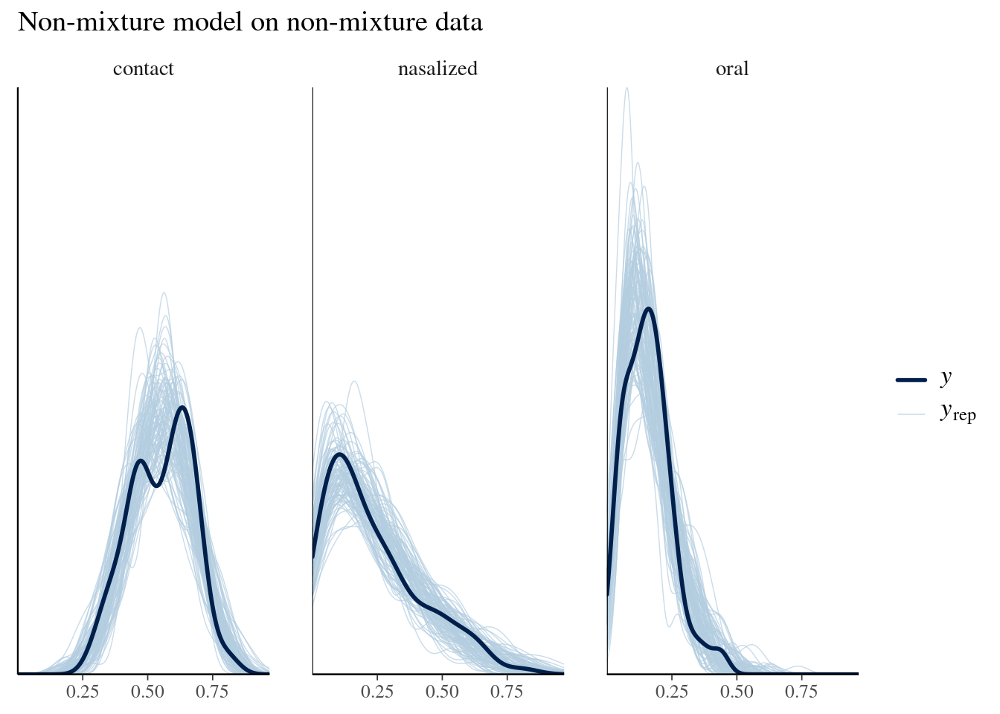
Model comparison via approximate leave-one-out cross-validation (LOO-CV) is rather inconclusive (in this small-data setting):
loo_mixm_mixd <- loo(mixm_mixd$draws("log_lik"))
loo_mixm_nonmixd <- loo(mixm_nonmixd$draws("log_lik"))
loo_nonmixm_mixd <- loo(nonmixm_mixd$draws("log_lik"))
loo_nonmixm_nonmixd <- loo(nonmixm_nonmixd$draws("log_lik"))loo_compare(list(mixture_model = loo_mixm_mixd,
non_mixture = loo_nonmixm_mixd)) elpd_diff se_diff
mixture_model 0.0 0.0
non_mixture -8.1 4.1 loo_compare(list(mixture_model = loo_mixm_nonmixd,
non_mixture = loo_nonmixm_nonmixd)) elpd_diff se_diff
non_mixture 0.0 0.0
mixture_model -2.1 3.8 Re-run everything changing both seeds to 123. What changes?
Real speakers differ in how faithfully they produce nasalised aspirates. The next two Stan programs introduce speaker-level group effects on the mixture weight and, in the final version, also on the contact/oral means via a Cholesky-factor LKJ prior. The high-level structure is unchanged.
#include beta2.stan
data {
int<lower = 1> N;
vector[N] nasalance;
array[N] int<lower = 1> E;
array[N] int<lower = 1> speaker;
int<lower = 1> N_speaker;
}
parameters {
real<lower = 0, upper = 1> mu_contact;
real<lower = 0, upper = sqrt(mu_contact*(1-mu_contact))> sigma_contact;
real<lower = 0, upper = 1 > mu_oral;
real<lower= 0, upper = sqrt(mu_oral*(1-mu_oral))> sigma_oral;
// now it's log odds
real<lower = 0, upper = 1> av_prob_nas;
real<lower = 0> tau_u;
vector[N_speaker] z_u;
}
transformed parameters {
vector[N_speaker] u;
u = tau_u * z_u;
}
model {
// priors for the task component
target += normal_lpdf(mu_contact | 0.6, 0.2);
target += normal_lpdf(mu_oral | 0.2, 0.3);
target += normal_lpdf(sigma_oral | 0, 0.3);
target += normal_lpdf(sigma_contact | 0, 0.3);
target += std_normal_lpdf(z_u);
target += normal_lpdf(tau_u | 0, 2);
target += beta_lpdf(av_prob_nas | 3, 10);
for(n in 1:N){
if(E[n] == 1) // contact
target += beta2_lpdf(nasalance[n] | mu_contact, sigma_contact);
else if(E[n] == 3) // oral
target += beta2_lpdf(nasalance[n] | mu_oral, sigma_oral);
else if(E[n] == 2) { //nas
real logodds_nas = logit(av_prob_nas) + u[speaker[n]];
target += log_sum_exp(log_inv_logit(logodds_nas) +
beta2_lpdf(nasalance[n] | mu_contact, sigma_contact),
log1m_inv_logit(logodds_nas)+
beta2_lpdf(nasalance[n] | mu_oral, sigma_oral));
}
}
}
generated quantities {
vector[N] log_lik;
vector[N] nasalance_rep;
vector[N_speaker] prob_nas_speaker = inv_logit(logit(av_prob_nas) + u);
for (n in 1:N) {
if (E[n] == 1) { // contact
log_lik[n] = beta2_lpdf(nasalance[n] | mu_contact, sigma_contact);
nasalance_rep[n] = beta2_rng(mu_contact, sigma_contact);
} else if (E[n] == 3) { // oral
log_lik[n] = beta2_lpdf(nasalance[n] | mu_oral, sigma_oral);
nasalance_rep[n] = beta2_rng(mu_oral, sigma_oral);
} else if (E[n] == 2) { // nas
real logodds_nas = logit(av_prob_nas) + u[speaker[n]];
real theta = inv_logit(logodds_nas);
log_lik[n] = log_sum_exp(
log(theta) + beta2_lpdf(nasalance[n] | mu_contact, sigma_contact),
log1m(theta) + beta2_lpdf(nasalance[n] | mu_oral, sigma_oral)
);
if (bernoulli_rng(theta) == 1)
nasalance_rep[n] = beta2_rng(mu_contact, sigma_contact);
else
nasalance_rep[n] = beta2_rng(mu_oral, sigma_oral);
}
}
}mix_s_m <- cmdstan_model("./mix_s.stan")We first verify that we can recover the generating parameters.
nas_ls <- list(N = nrow(nas_data),
nasalance = nas_data$nasalance,
E = nas_data$E,
speaker = nas_data$speaker,
N_speaker = max(nas_data$speaker))
nas_mix <- mix_s_m$sample(data = nas_ls, parallel_chains = 4)yrep <- nas_mix$draws("nasalance_rep") |>
posterior::as_draws_matrix()
ppc_dens_overlay_grouped(
y = nas_data$nasalance,
yrep = yrep[1:100, ],
group = nas_data$etymology
) +
ggtitle("Real data")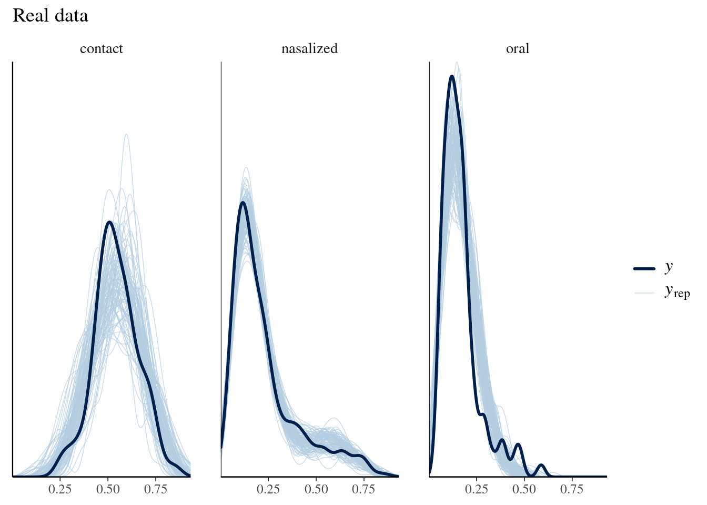
yrep_mat <- yrep[1:100, ] # assuming yrep is already created
n_draws <- nrow(yrep_mat)
# Build long dataframe from yrep and attach metadata
yrep_df <- as.data.frame(t(yrep_mat)) |>
setNames(paste0("draw", 1:n_draws)) |>
mutate(
obs = nas_data$nasalance,
speaker = nas_data$speaker,
etymology = nas_data$etymology
) |>
pivot_longer(
cols = starts_with("draw"),
names_to = "draw",
values_to = "yrep"
)
# Plot
ggplot(yrep_df, aes(x = etymology, y = yrep, fill = etymology)) +
geom_violin(alpha = 0.5, scale = "width") +
geom_point(aes(y = obs), shape = 21, size = 1.5, position = position_jitter(width = 0.1)) +
facet_wrap(~ speaker, scales = "free_y") +
labs(title = "Posterior predictive violins per speaker and etymology",
x = "Etymology", y = "Nasalance") +
theme_minimal() +
theme(axis.text.x = element_text(angle = 45, hjust = 1))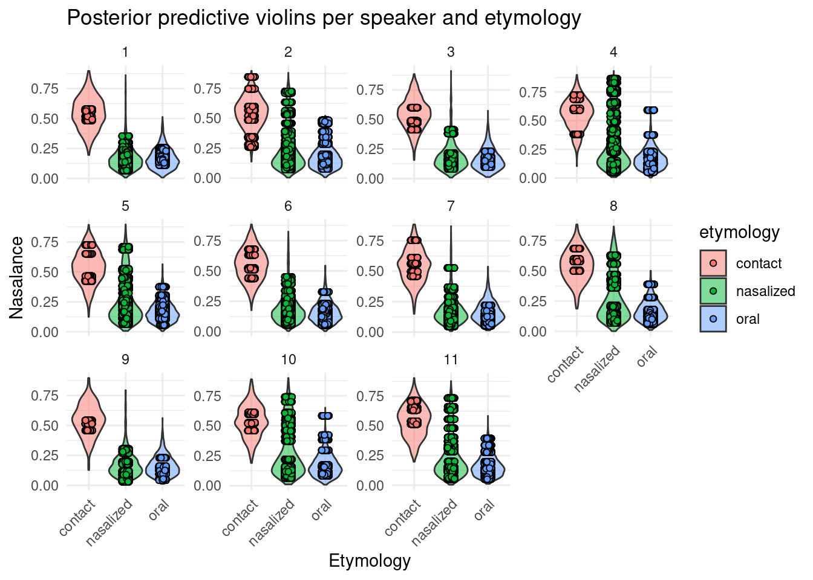
Are there subjects who nasalize more?
mcmc_intervals(nas_mix$draws("prob_nas_speaker"))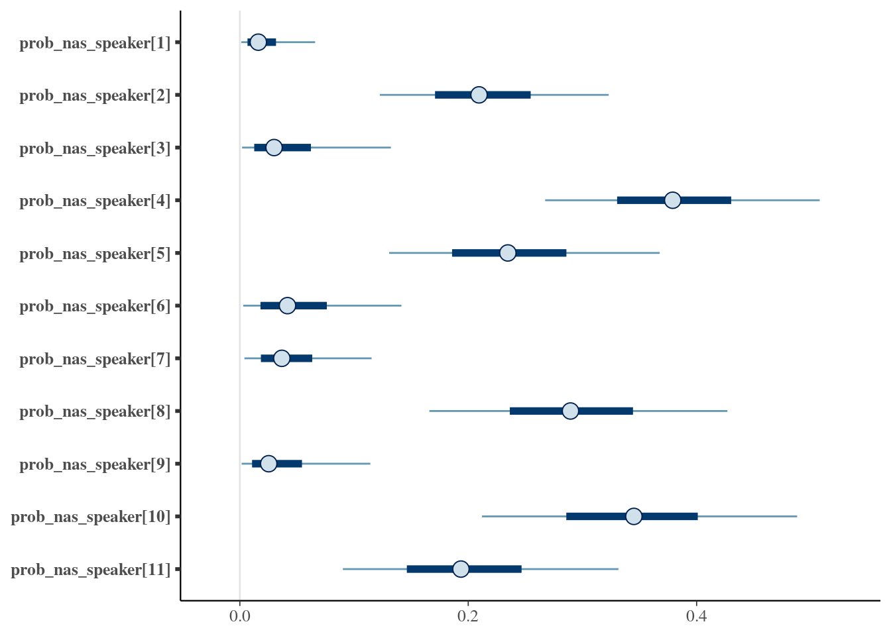
Add an analogous parameter w which modulates the probability of nasalization by root. Which roots are most likely to be nasalized?
A more comprehensive hierarchical model allows mu_contact and mu_oral1 to vary by speaker and/or by root.
Stan code:
#include beta2.stan
data {
int<lower = 1> N;
vector[N] nasalance;
array[N] int<lower = 1> E;
array[N] int<lower = 1> speaker;
int<lower = 1> N_speaker;
}
parameters {
real<lower = 0, upper = 1> mu_contact;
real<lower = 0, upper = sqrt(mu_contact*(1-mu_contact))> sigma_contact;
real<lower = 0, upper = 1 > mu_oral;
real<lower= 0, upper = sqrt(mu_oral*(1-mu_oral))> sigma_oral;
// now it's log odds
real<lower = 0, upper = 1> av_prob_nas;
vector<lower = 0>[3] tau_u;
matrix[3, N_speaker] z_u;
cholesky_factor_corr[3] L_u;
}
transformed parameters {
matrix[N_speaker, 3] u;
u = (diag_pre_multiply(tau_u, L_u) * z_u)';
}
model {
// priors for the task component
target += normal_lpdf(mu_contact | 0.6, 0.2);
target += normal_lpdf(mu_oral | 0.2, 0.3);
target += normal_lpdf(sigma_oral | 0, 0.3);
target += normal_lpdf(sigma_contact | 0, 0.3);
target += lkj_corr_cholesky_lpdf(L_u | 2);
target += std_normal_lpdf(to_vector(z_u));
target += normal_lpdf(tau_u | 0, 2);
target += beta_lpdf(av_prob_nas | 3, 10);
for(n in 1:N){
real mu_c_adj = inv_logit(logit(mu_contact) + u[speaker[n], 1]);
real mu_o_adj = inv_logit(logit(mu_oral) + u[speaker[n], 3]);
if(E[n] == 1) // contact
target += beta2_lpdf(nasalance[n] | mu_c_adj, sigma_contact);
else if(E[n] == 3) // oral
target += beta2_lpdf(nasalance[n] | mu_o_adj, sigma_oral);
else if(E[n] == 2) { //nas
real logodds_nas = logit(av_prob_nas) + u[speaker[n], 2];
target += log_sum_exp(log_inv_logit(logodds_nas) +
beta2_lpdf(nasalance[n] | mu_c_adj, sigma_contact),
log1m_inv_logit(logodds_nas)+
beta2_lpdf(nasalance[n] | mu_o_adj, sigma_oral));
}
}
}
generated quantities {
vector[N] log_lik;
vector[N] nasalance_rep;
vector[N_speaker] prob_nas_speaker = inv_logit(logit(av_prob_nas) + u[,3]);
for (n in 1:N) {
real mu_c_adj = inv_logit(logit(mu_contact) + u[speaker[n], 1]);
real mu_o_adj = inv_logit(logit(mu_oral) + u[speaker[n], 3]);
if (E[n] == 1) { // contact
log_lik[n] = beta2_lpdf(nasalance[n] | mu_c_adj, sigma_contact);
nasalance_rep[n] = beta2_rng(mu_c_adj, sigma_contact);
} else if (E[n] == 3) { // oral
log_lik[n] = beta2_lpdf(nasalance[n] | mu_o_adj, sigma_oral);
nasalance_rep[n] = beta2_rng(mu_o_adj, sigma_oral);
} else if (E[n] == 2) { // nas
real logodds_nas = logit(av_prob_nas) + u[speaker[n], 3];
real theta = inv_logit(logodds_nas);
log_lik[n] = log_sum_exp(
log(theta) + beta2_lpdf(nasalance[n] | mu_c_adj, sigma_contact),
log1m(theta) + beta2_lpdf(nasalance[n] | mu_o_adj, sigma_oral)
);
if (bernoulli_rng(theta) == 1)
nasalance_rep[n] = beta2_rng(mu_c_adj, sigma_contact);
else
nasalance_rep[n] = beta2_rng(mu_o_adj, sigma_oral);
}
}
}mix_s2_m <- cmdstan_model("./mix_s2.stan")nas2_mix <- mix_s2_m$sample(data = nas_ls, parallel_chains = 4)nas2_mix variable mean median sd mad q5 q95 rhat ess_bulk ess_tail
lp__ 546.59 546.95 6.15 6.29 536.10 556.04 1.00 955 1777
mu_contact 0.54 0.54 0.02 0.02 0.51 0.57 1.00 2771 2464
sigma_contact 0.13 0.13 0.01 0.01 0.11 0.14 1.00 3288 2848
mu_oral 0.16 0.16 0.01 0.01 0.15 0.18 1.00 1856 1983
sigma_oral 0.08 0.08 0.00 0.00 0.08 0.09 1.00 5449 2789
av_prob_nas 0.15 0.14 0.06 0.05 0.07 0.26 1.00 2133 2315
tau_u[1] 0.17 0.16 0.09 0.08 0.04 0.32 1.00 1266 1301
tau_u[2] 1.68 1.57 0.63 0.54 0.89 2.87 1.00 1718 2197
tau_u[3] 0.19 0.18 0.06 0.05 0.12 0.30 1.00 1879 2438
z_u[1,1] -0.52 -0.54 0.87 0.83 -1.93 0.91 1.00 2513 3060
# showing 10 of 1493 rows (change via 'max_rows' argument or 'cmdstanr_max_rows' option)yrep <- nas2_mix$draws("nasalance_rep") |>
posterior::as_draws_matrix()
ppc_dens_overlay_grouped(
y = nas_data$nasalance,
yrep = yrep[1:100, ],
group = nas_data$etymology
) +
ggtitle("Real data with the more complex model")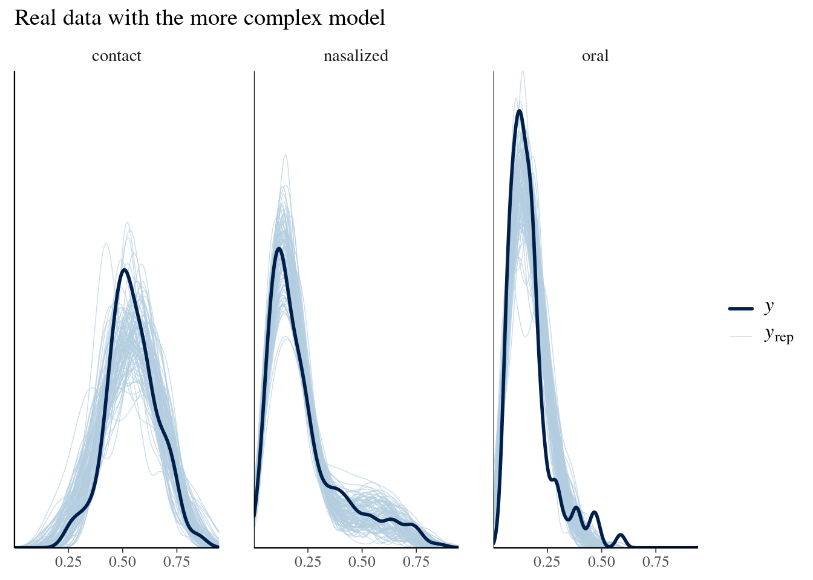
Consider additional posterior predictive checks.
Consider simulating data.
Is the hierarchical mixture model preferable to a hierarchical non-mixture alternative?
sessionInfo()R version 4.5.0 (2025-04-11)
Platform: x86_64-pc-linux-gnu
Running under: Ubuntu 22.04.5 LTS
Matrix products: default
BLAS: /usr/lib/x86_64-linux-gnu/blas/libblas.so.3.10.0
LAPACK: /usr/lib/x86_64-linux-gnu/lapack/liblapack.so.3.10.0 LAPACK version 3.10.0
locale:
[1] LC_CTYPE=en_US.UTF-8 LC_NUMERIC=C
[3] LC_TIME=nl_NL.UTF-8 LC_COLLATE=en_US.UTF-8
[5] LC_MONETARY=nl_NL.UTF-8 LC_MESSAGES=en_US.UTF-8
[7] LC_PAPER=nl_NL.UTF-8 LC_NAME=C
[9] LC_ADDRESS=C LC_TELEPHONE=C
[11] LC_MEASUREMENT=nl_NL.UTF-8 LC_IDENTIFICATION=C
time zone: Europe/Amsterdam
tzcode source: system (glibc)
attached base packages:
[1] stats graphics grDevices utils datasets methods base
other attached packages:
[1] loo_2.8.0 ggplot2_3.5.2 brms_2.22.0 Rcpp_1.0.14
[5] bayesplot_1.12.0 posterior_1.6.1 cmdstanr_0.9.0 tidytable_0.11.2
loaded via a namespace (and not attached):
[1] bridgesampling_1.1-5 tensorA_0.36.2.1 sass_0.4.10
[4] generics_0.1.4 stringi_1.8.7 lattice_0.22-5
[7] digest_0.6.37 magrittr_2.0.3 evaluate_1.0.3
[10] grid_4.5.0 RColorBrewer_1.1-3 bookdown_0.43
[13] mvtnorm_1.3-3 fastmap_1.2.0 plyr_1.8.9
[16] jsonlite_2.0.0 Matrix_1.7-3 processx_3.8.6
[19] backports_1.5.0 ps_1.9.1 Brobdingnag_1.2-9
[22] scales_1.4.0 codetools_0.2-19 jquerylib_0.1.4
[25] abind_1.4-8 cli_3.6.5 rlang_1.1.6
[28] withr_3.0.2 cachem_1.1.0 yaml_2.3.10
[31] tools_4.5.0 parallel_4.5.0 reshape2_1.4.4
[34] rstantools_2.4.0 checkmate_2.3.2 coda_0.19-4.1
[37] dplyr_1.1.4 vctrs_0.6.5 R6_2.6.1
[40] matrixStats_1.5.0 lifecycle_1.0.4 stringr_1.5.1
[43] pkgconfig_2.0.3 RcppParallel_5.1.10 pillar_1.10.2
[46] bslib_0.9.0 gtable_0.3.6 data.table_1.17.0
[49] glue_1.8.0 xfun_0.52 tibble_3.3.0
[52] tidyselect_1.2.1 knitr_1.50 farver_2.1.2
[55] nlme_3.1-168 htmltools_0.5.8.1 labeling_0.4.3
[58] rmarkdown_2.29 compiler_4.5.0 distributional_0.5.0I used R (Version 4.5.0; R Core Team 2025) and the R-packages bayesplot (Version 1.12.0; Gabry and Mahr 2025), brms (Version 2.22.0; Bürkner 2024), cmdstanr (Version 0.9.0; Gabry et al. 2025), ggplot2 (Version 3.5.2; Wickham et al. 2025), loo (Version 2.8.0; Vehtari et al. 2024), posterior (Version 1.6.1; Bürkner et al. 2025), Rcpp (Version 1.0.14; Eddelbuettel et al. 2025) and tidytable (Version 0.11.2; Fairbanks 2024) for all our analyses.
Bürkner, Paul-Christian. 2024. Brms: Bayesian Regression Models Using Stan. https://github.com/paul-buerkner/brms.
Bürkner, Paul-Christian, Jonah Gabry, Matthew Kay, and Aki Vehtari. 2025. Posterior: Tools for Working with Posterior Distributions. https://mc-stan.org/posterior/.
Eddelbuettel, Dirk, Romain Francois, JJ Allaire, Kevin Ushey, Qiang Kou, Nathan Russell, Iñaki Ucar, Doug Bates, and John Chambers. 2025. Rcpp: Seamless R and C++ Integration. https://www.rcpp.org.
Fairbanks, Mark. 2024. Tidytable: Tidy Interface to Data.table. https://markfairbanks.github.io/tidytable/.
Gabry, Jonah, Rok Češnovar, Andrew Johnson, and Steve Bronder. 2025. Cmdstanr: R Interface to Cmdstan. https://mc-stan.org/cmdstanr/.
Gabry, Jonah, and Tristan Mahr. 2025. Bayesplot: Plotting for Bayesian Models. https://mc-stan.org/bayesplot/.
Modrák, Martin, Angie H. Moon, Shinyoung Kim, Paul-Christian Bürkner, Niko Huurre, Kateřina Faltejsková, Andrew Gelman, and Aki Vehtari. 2023. “Simulation-Based Calibration Checking for Bayesian Computation: The Choice of Test Quantities Shapes Sensitivity.” Bayesian Analysis, 1–28. https://doi.org/10.1214/23-BA1404.
Nicenboim, Bruno, Daniel J. Schad, and Shravan Vasishth. 2025. Introduction to Bayesian Data Analysis for Cognitive Science. 1st ed. Chapman; Hall/CRC. https://doi.org/10.1201/9780429342646.
R Core Team. 2025. R: A Language and Environment for Statistical Computing. Vienna, Austria: R Foundation for Statistical Computing. https://www.R-project.org/.
Talts, Sean, Michael J. Betancourt, Daniel P. Simpson, Aki Vehtari, and Andrew Gelman. 2018. “Validating Bayesian Inference Algorithms with Simulation-Based Calibration.” arXiv Preprint arXiv:1804.06788.
Vehtari, Aki, Jonah Gabry, Måns Magnusson, Yuling Yao, Paul-Christian Bürkner, Topi Paananen, and Andrew Gelman. 2024. Loo: Efficient Leave-One-Out Cross-Validation and Waic for Bayesian Models. https://mc-stan.org/loo/.
Wickham, Hadley, Winston Chang, Lionel Henry, Thomas Lin Pedersen, Kohske Takahashi, Claus Wilke, Kara Woo, Hiroaki Yutani, Dewey Dunnington, and Teun van den Brand. 2025. Ggplot2: Create Elegant Data Visualisations Using the Grammar of Graphics. https://ggplot2.tidyverse.org.
with considerable extra work we could also deal with sigma↩︎